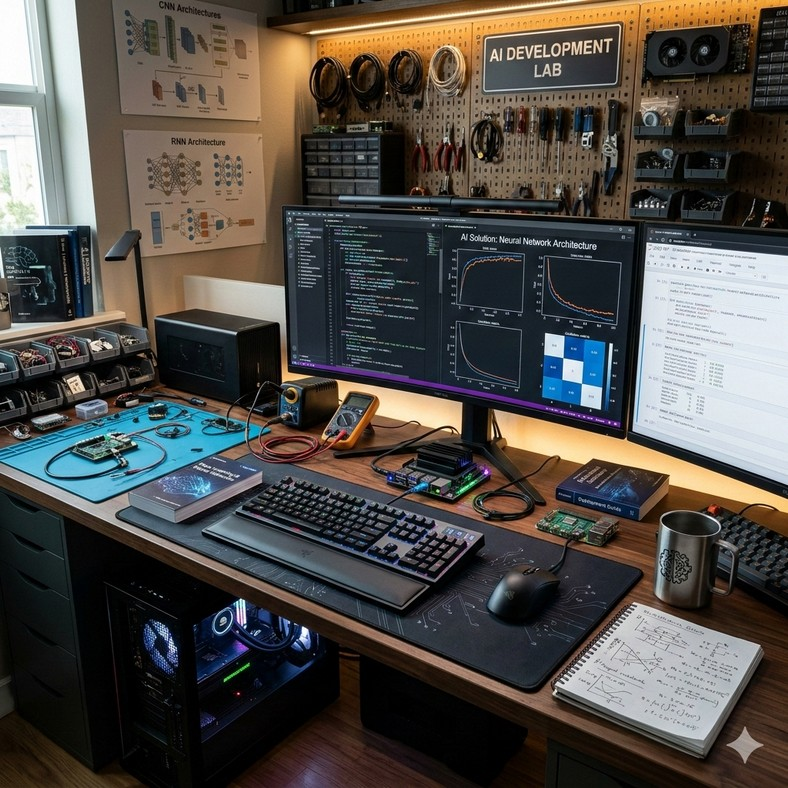

PORTFOLIO · AI 솔루션 · 풀스택 · 유지보수 개발
만들고, 연결하고,
끝까지 운영하는 개발자
웹 서비스 개발부터 AI 연동, 운영 환경의 유지보수까지 하나의 흐름으로 다루는 엔지니어
이미르
Email mileui73@gmail.com · Mobile 010-4850-5772 · GitHub github.com/lalala5772
전북대학교 IT정보공학과 학사 졸업 (2019.03 – 2024.02 · 3.35/4.5)
2026. 10
Career Vision & Journey
데이터를 모으는 일에서 시작해, 서비스를 만들고 AI를 연결하고
운영하는 일까지 경험을 넓혀왔습니다
Career Vision
“만든 것이 현장에서 끝까지
동작하게 하는 개발자”

개발웹 서비스를 직접 설계하고 구현하기
연결업무·지식·시스템을 AI와 잇기
운영운영 환경에서 안정적으로 지키고 다듬기
Career Journey
'19.03
~ '24.02
전북대학교 | IT정보공학과 학사 졸업
학점 3.35 / 4.5 · SW캡스톤디자인 우수상 · CV연구실 학부연구
'23.03
~ '23.12
셈스게임즈 | 데이터 관리·개발 인턴
IoT 센서 수집·전송 프로세스 분리로 적재 누락 0건
'24.11
~ '25.05
KDT 풀스택 과정 | 팀 프로젝트
Spring Boot · React 서비스 2건, RAG 챗봇 · 최우수상
'26.05
~ '26.07
올림플래닛 | 사업운영 프로
LLM 입찰공고 판정 시스템 구축·운영 (88초 → 13초)
'26.09
~ 현재
올포랜드 | 개발직군 인턴
금융정보분석원(FIU) 정보시스템 유지보수·운영 · SSL·웹 접근성 인증 대응
Key Strength
서비스를 만들고, AI를 연결하고, 운영 환경에서 지키는 일을
세 가지 강점으로 직접 해보았습니다
요구 정리부터 운영 개선까지 하나의 흐름으로
요구 → 기술 요건
설계 · 구현
연동 · 배포
운영 · 개선
공통된 일하는 방식 — 낯선 문제도 기초 원리에서 출발해 원인을 확인하고, 현업 담당자와 직접 소통하며, 결과를 문서로 남겨 팀과 공유합니다.
Key Strength
LLM 입찰공고 판정 시스템 구축·운영 (85% 단축) · 하이브리드 검색 RAG 챗봇
2서비스를 처음부터 끝까지 만드는 풀스택 개발
Spring Boot · React 서비스 2건 · 인증 · 실시간 통신 · KDT 최우수상
FIU 서버 페이징 전환 · SSL 인증서 교체 · 웹 접근성(WA) 인증 · 보안 조치
Key Strength 1 – 현장 문제를 AI 업무로 연결 | 나라장터 입찰공고 AI 판정 시스템
사업운영 직무에서 매일 반복되던 공고 확인 업무를 직접 기술 요건으로 정리하고,
LLM 판정 시스템으로 바꿔 업무 시간을 효율적으로 단축
현업의 문제
Before — 담당자의 공고 확인
1여러 키워드로 나라장터 직접 검색
2공고를 하나씩 열어 내용 확인
3사업 관련성을 사람이 판단
4참여할 만한 공고 정리·공유
요구 → 기술 요건 정리
관련 공고를 빠짐없이 보고 싶다
➡
자사 솔루션 유관 13개 키워드로 나라장터 Open API 조회
사람이 하던 판단을 대신해 줬으면
➡
Claude가 공고별 적격 여부를 판단하고 점수화
꼭 봐야 할 공고만 받고 싶다
➡
기준 점수 이상 공고만 선별
매일 아침, 쓰던 메신저로
➡
일일 배치 실행 + Google Chat 웹훅 알림
※ 기획 · 개발 · 운영 · 개선 수행 (2026.05 – 2026.07, Python)
Key Strength 1 – 현장 문제를 AI 업무로 연결 | 시스템 설계
판단이 필요한 부분은 LLM에, 최종 선별은 점수 규칙에 맡겨
알림 결과를 통제할 수 있는 파이프라인으로 설계
➡
STEP 2
공고 수집
나라장터 Open API
13개 키워드 조회
➡
STEP 3
AI 판정
Claude API
공고별 적격 판단·점수
(최대 20건)
➡
➡
설계 판단
역할 분리
애매한 판단(관련성)은 LLM이, 통과 여부는 점수 기준이라는 명확한 규칙이 결정해 결과를 예측·조정 가능하게
노이즈 최소화
모든 공고가 아니라 기준 점수를 넘은 공고만 보내, 담당자가 알림을 신뢰하고 바로 행동할 수 있게
기존 업무 도구 활용
새 화면을 만들지 않고 담당자가 이미 쓰는 Google Chat으로 전달해 도입 부담 제거
Key Strength 1 – 현장 문제를 AI 업무로 연결 | 운영 중 개선과 결과
운영 중 드러난 88초의 실행 시간을 네트워크 I/O 대기로 진단하고,
Rate Limit 범위 안에서 병렬화해 13초로 단축
After
병렬 처리 — 제한된 워커가 동시에 (Rate Limit 범위 내)
원인 진단 — I/O Bound
- 실행 시간 대부분이 외부 API 응답 대기
- 공고별 판정은 서로 독립된 작업
- 공고당 수 초 걸리는 LLM 판정이 최대 병목
스레드 기반 병렬화
대기 중심 작업이므로 ThreadPoolExecutor로 API 조회·LLM 판정을 동시 처리
동시 실행 수 제한
Rate Limit을 고려해 워커 수를 제한, 안정성과 속도의 균형
다음 단계
키워드·판정 기준·알림 채널을 설정으로 분리하고, 담당자 피드백으로 오탐·누락을 측정하는 품질 루프 설계
Key Strength 1 – 현장 문제를 AI 업무로 연결 | 지식을 AI가 쓰는 형태로 가공
범용 모델이 도메인 지식을 잘 다루지 못하는 한계를,
검색 구조와 학습 데이터를 직접 설계해 보완했습니다
선견지표 RAG 챗봇 · KDT 최우수상
문제 범용 임베딩(MiniLM)이 한국어 정치·정책 용어를 잘 구분하지 못해 무응답·환각 발생
① 하이브리드 검색
BM25 키워드 + 384차원 Dense 벡터, 질문 의도에 따라 인덱스·가중치 조정
실패 시 ↓
② 쿼리 확장
검색 실패 시 질의를 확장해 재검색
실패 시 ↓
③ 키워드 폴백
그래도 실패하면 키워드 검색으로 응답 근거 확보
→ 무응답·환각 최소화 · FastAPI로 챗봇 서빙
시맨틱 위치정보 추정 · 캡스톤 우수상
문제 “공대 7호관 옆 흡연구역” 같은 자연어 위치 질의는 표현이 제각각이라 키워드 일치로 찾기 어려움
지식 구축
캠퍼스 POI 9종에 좌표 + 위치 설명 텍스트 매핑
↓
학습 데이터
질의 · 정답 문서 · 오답 문서 쌍으로 직접 구성
↓
DPR 학습
KLUE-BERT 기반 SBERT를 추가 학습해 의미 유사도로 POI 검색
→ Flask 서버 + 지도 클라이언트로 질의 위치 표시
Key Strength 2 – 서비스를 처음부터 끝까지 | 풀스택 팀 프로젝트
인증, 상태 관리, 실시간 통신, 동시성 제어까지
백엔드와 프론트엔드를 오가며 서비스를 직접 완성했습니다
선견지표 — 선거 정보·모의투표 플랫폼 · 최우수상
React
Zustand
⇄
Spring Boot
Security · JWT
⇄
FastAPI
RAG 챗봇
⇄
Elasticsearch
Web3j
| 인증 | Google OAuth2 + JWT 로그인, 전역 로그인 상태를 Zustand로 관리 |
| 비동기 제어 | 페이지 전환 시 이전 응답이 최신 상태를 덮어쓰는 레이스 컨디션 → AbortController로 이전 요청 취소 |
| 투표 | Web3j 기반 블록체인/DB 하이브리드 투표 구조 |
TechX 그룹웨어 — 실시간 사내 협업 플랫폼
Peer A
브라우저
⇄
시그널링 서버 (직접 구현)
Spring Boot · STOMP/SockJS
⇄
Peer B
브라우저
| 화상회의 | WebRTC Mesh 다자간 화상회의, 원격 세션 준비 전 도착한 ICE 후보를 큐로 관리해 연결 안정화 |
| 인증 | Access / Refresh / QR 토큰 분리, 커스텀 필터와 블랙리스트로 탈취 토큰 재사용 차단 |
| 동시성 | 회의실·비품 예약에 DB 조건문과 @Transactional 적용해 시간 중복 예약 방지 |
Key Strength 3 – 운영 중인 시스템을 안정적으로 | 금융정보분석원(FIU) 대민 게시판
데이터가 쌓일수록 느려지던 대민 게시판을,
쿼리 내 조건 분기와 서버 페이징으로 전환했습니다
Before — 클라이언트에서 전체 목록 처리
1게시판 진입 시 전체 목록을 한 번에 조회
2탭 구분과 페이지 분할을 클라이언트 스크립트가 처리
3게시물이 누적될수록 응답·렌더링 지연
4보지 않는 데이터까지 매번 전송
➡
After — 서버에서 필요한 페이지만 조회
1MyBatis 쿼리에 탭 조건 분기 추가
2Tibero 기반 서버 페이징 구현
3클라이언트 탭 분기 로직을 서버 요청 방식으로 수정
4사용자가 위치한 페이지의 목록만 응답
수행 범위 — 현행 분석 → 쿼리·화면 수정 → 개발서버 테스트 → 배포요청서 작성 → 운영 반영
활용 기술 전자정부프레임워크JSPMyBatisTiberoSoftManager
Key Strength 3 – 운영 중인 시스템을 안정적으로 | 인증·보안 대응
서비스를 멈추지 않고 SSL 인증서를 교체하고,
웹 접근성(WA) 인증 기준에 맞춰 대민 페이지를 점검·개선했습니다
SSL 인증서 교체
1일정 확인
인증서 만료 일정과 적용 대상 서버 파악
2교체·적용
신규 인증서를 WEB/WAS에 적용, 체인(중간) 인증서 검증
3검증
개발서버 확인 후 운영 반영, 브라우저별 접속·Mixed Content 점검
웹 접근성(WA) 인증 대응
2수정
대체 텍스트, 키보드 접근, 입력 서식 레이블, 명도 대비 등 개선
3재검증
수정 결과를 다시 점검하고 담당 주무관과 공유
보안 조치 웹 취약점 점검 결과에 따른 서비스 로직 수정 · 침해사고 대응 지침에 따른 jQuery 버전 분석 · 불필요한 DB 계정·권한 정비 · 점검 기간 안내 팝업 게시
Key Strength 3 – 운영 중인 시스템을 안정적으로 | 운영 프로세스와 협업
현업 담당자와 직접 소통하고, 정해진 통제 절차 안에서
점검·개발·배포를 반복하며 운영 환경을 지켰습니다
SR 처리 · 배포
“요구를 직접 듣고, 배포까지 조율합니다”
1홈페이지 담당 주무관과 직접 요구사항 협의
2분석 · 개발 · 단위/통합 테스트
3DBA · AA 대상 배포요청서 작성·조율
4SoftManager 형상관리 통제 하에 배포
일일 점검 · 모니터링
“문제가 커지기 전에 먼저 확인합니다”
1DB·배치 서버 프로세스 구동 확인
2서버 CPU·메모리·디스크 사용량 점검
3JENNIFER로 응답 시간·에러 트랜잭션 확인
4이상 징후를 담당자와 즉시 공유
코드 품질 · 문서화
“배운 것은 팀의 자산으로 남깁니다”
1코드리뷰 체크리스트 수립
2Null·예외·트랜잭션, SQL 인젝션 방지 점검
3리팩토링 가이드 문서화 및 팀 공유
4개발목록 관리대장 업데이트, PL 보고
주요 SR 관리자 저장 안내 메시지 기능 추가 · 법령정보 게시판 첨부파일 다운로드 경로 긴급 수정 · 뷰어 다운로드 URL 오류 수정·배포
Tech Stack
세 가지 강점을 뒷받침하는 기술들입니다
AI 솔루션
LLM · 검색
Claude APIOpenAI APIRAGElasticsearch
모델 · 데이터
Sentence-TransformersKLUE-BERTDPRTensorFlowPandasNumPy
연동 · 처리
PythonFastAPIFlaskThreadPoolExecutorWebhook
풀스택 개발
Backend
JavaSpring BootSpring SecurityJWTOAuth2
Frontend
ReactJavaScriptZustand
Real-time
WebRTCWebSocketSTOMP/SockJS
Infra
DockerAWS(EC2, S3, DynamoDB)GitGitHub Actions
운영 · 유지보수
Framework
전자정부프레임워크JSPMyBatis
Database
TiberoOracleMySQLSQLD
운영 도구
JENNIFER (APM)SoftManagerLinuxSVNJenkins
보안 · 인증
SSL/TLS 인증서웹 접근성(KWCAG)웹 취약점 조치
저의 포부
어떤 자리에서든, 만든 것이 현장에서 끝까지 동작하도록
개발하고, 연결하고, 지키는 엔지니어가 되겠습니다
| 직무 | 빠른 적응과 현장 안착 | 경험을 팀의 자산으로 |
|---|
| AI 솔루션 | 적용 조직의 업무 정책·지식·연동 시스템을 빠르게 이해하고, AI가 정확히 쓸 수 있는 형태로 연결 | 적용하며 마주친 문제를 공통 모듈·설정 기반 구조로 정리해 다음 적용 시간을 줄이기 |
| 풀스택 개발 | 요구사항을 기술 요건으로 정리하고, 백엔드부터 화면까지 책임지고 완성 | 인증·상태 관리·동시성처럼 반복되는 문제의 해법을 코드와 문서로 남기기 |
| 운영·유지보수 | 운영 절차와 통제를 지키며 SR을 정확하고 빠르게 처리 | 점검 체크리스트와 리팩토링 가이드를 꾸준히 개선해 장애를 미리 줄이기 |
“기능을 만드는 것에서 멈추지 않고, 현장에서 안정적으로 쓰이는 순간까지 책임지는 개발자가 되겠습니다”
Appendix. 주요 경험 수행 목록
업무 현장과 팀 프로젝트에서, 웹·AI·운영 시스템을
직접 만들고 운영해 본 경험이 있습니다
올포랜드 | 금융정보분석원 정보시스템 유지보수
- 대민 재정정보 게시판 서버 페이징 전환
- SSL 인증서 교체 · 웹 접근성(WA) 인증 대응
- 보안 조치 · SR 처리 · JENNIFER 일일 점검
2026.09
– 현재
올림플래닛 | 입찰공고 AI 판정 시스템
- Claude 기반 판정 파이프라인 구축·운영
- 병렬화로 88초 → 13초, 수작업 확인 대체
2026.05
– 2026.07
선견지표 | 선거 정보·모의투표 플랫폼
- Elasticsearch 하이브리드 RAG 챗봇
- OAuth2+JWT 인증 · Web3j 하이브리드 투표 · 최우수상
2025.04
– 2025.05
TechX 그룹웨어 | 실시간 협업 플랫폼
- WebRTC Mesh 화상회의 · 시그널링 서버
- 토큰 분리 인증 · 예약 동시성 제어
2025.04
– 2025.05
캡스톤 | 시맨틱 위치정보 추정
- POI 데이터·학습 쌍 구축, DPR 모델 학습
- 지도 시각화 클라이언트 개발 · 우수상
2023.09
– 2023.12
셈스게임즈 | IoT 센서 데이터 대시보드
- 수집·전송 프로세스 Multiprocessing 분리
- 센서 데이터 적재 누락 0건
2023.03
– 2023.12
Appendix. 학력 · 교육 · 수상 · 자격
기초를 다진 과정과 그 결과입니다
학력 · 교육
| 2019.03 – 2024.02 | 전북대학교 IT정보공학과 학사 졸업 · 3.35 / 4.5 |
| 2024.11 – 2025.05 | KDT 클라우드 활용 풀스택 개발 과정 수료 |
| 2024.01 | AWS DeepRacer 자율주행 강화학습 동계 캠프 |
| 2022.08 – 2022.11 | 전북대 CV연구실 학부연구 (중기부 R&D 과제) |
| 2022.04 – 2022.12 | 한이음 ICT 멘토링 프로젝트 |
| 2022.01 – 2022.09 | 42 SEOUL 본과정 |
| 2022.08 | AWS Technical Essentials 수료 |
수상
| 2025.05 | 최우수상 KDT 풀스택 개발 프로젝트 '선견지표' |
| 2023.12 | 우수상 SW캡스톤디자인 경진대회 |
| 2023.12 | 장려상 제1회 SW 창업 아이디어 경진대회 |
| 2020.12 | 동상 IT정보공학과 설계작품경진대회 |
자격
| 2021.04 | SQLD (SQL 개발자) · 한국데이터산업진흥원 |
| 2026.02 | OPIc IM2 (영어) · ACTFL |
감사합니다
만든 것이 현장에서 끝까지 동작하도록, 개발하고 연결하고 지키는 일을 하고 싶습니다.
mileui73@gmail.com · 010-4850-5772 · github.com/lalala5772